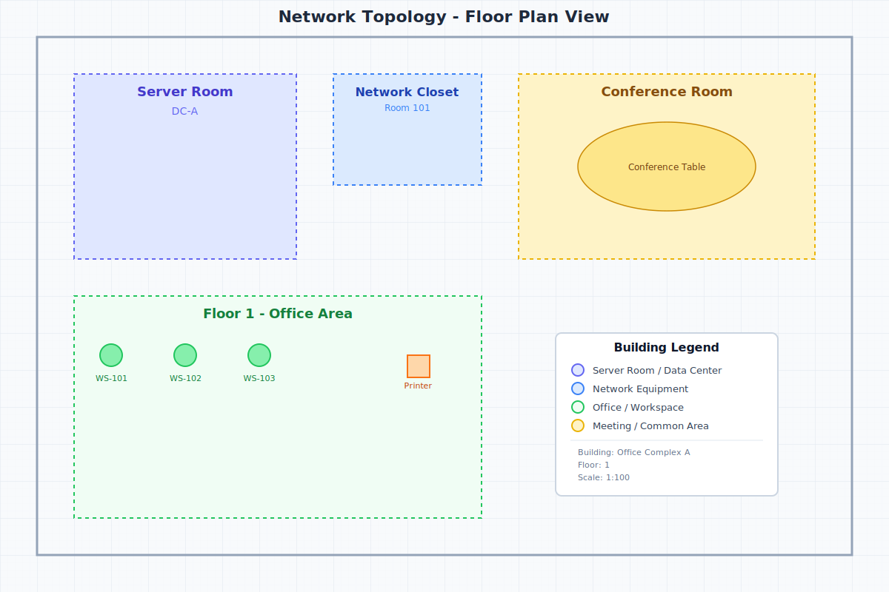

📍 Floor Plan Background
Professional floor plan with rooms, office areas, and network zones.

📁 Path: /assets/images/floor-plan-sample.svg
📐 Size: 1200x800px
💡 Usage: Background layer for network topology visualization
🎯 Node Type Icons
SVG icons representing different network device types.
📁 Path: /assets/icons/[type]-icon.svg
📐 Size: 48x48px (scalable)
💡 Usage: Node representations in the graph visualization
📊 Mock Data File
Comprehensive network topology with 12 nodes, 15 connections, and 2 groups.
📁 Path: /assets/data/mock-graph-data.json
📦 Contents:
• 12 network nodes (routers, switches, servers, workstations, devices)
• 15 network cables (fiber, ethernet, with redundancy)
• 2 logical groups (Floor 1, Server Room)
• Rich metadata (IPs, models, bandwidth, locations)
💡 Usage: Click "Load Mock Data" in the application toolbar to visualize